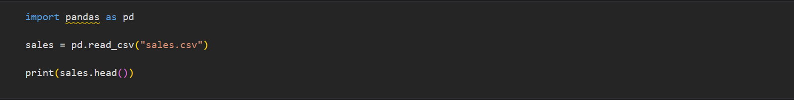

Pandas Series

Let's Start the Discussion
Pandas is a Python library for data analysis. Started by Wes McKinney in 2008 out of a need for a powerful and flexible quantitative analysis tool, pandas has grown into one of the most popular Python libraries. It has an extremely active community of contributors.
Pandas Series----One dimesional data structure of Pandas
Series is a one-dimensional array with axis labels We can access the items in a Series with their index
Output for above code
0 10
1 20
2 30
dtype: int64
10
DataFrame---the two-dimensional data structure of Pandas
Consists of labeled rows and columns how to create a DataFrame using Python dictionaries and NumPy arrays. using the shape method that returns a tuple containing the number of rows and columns
Output for above code
Name Age
0 Jane 24
1 John 21
2 Matt 26
3 Ashley 32
(4, 2)
By default, column names are assigned integer index, but we can change it using the columns parameter
Output for above code
A B C D E
0 3 6 1 8 2
1 3 5 6 9 6
2 6 9 5 9 7
How to use the read_csv function
Output for above code
product_code product_group stock_qty Cost Price last_week_sales last_month_sales
0 4187 PG2 498 420.76 569.91 13 58
1 4195 PG2 473 545.64 712.41 16 58
2 4204 PG2 968 640.42 854.91 22 88
3 4219 PG2 241 869.69 1034.55 14 45
4 4718 PG2 1401 12.54 26.59 50 285
The size, shape, and len methods
Output for above code
(1000, 7)
7000
1000
dtypes method returns the data type of all columns
columns method returns the column as an index but we can convert it into list
Output for above code
product_code int64
product_group object
stock_qty int64
cost float64
price float64
last_week_sales int64
last_month_sales int64
dtype: object
['product_code',
'product_group',
'stock_qty'
,
'cost',
'price',
'last_week_sales',
'last_month_sales']
We can use the astpye function to change the data types of columns. The astype function also accepts a dictionary, so we can change the data type of multiple columns in a single operation. The dictionary keys indicate that the column name and values are the new data types.
Output for above code
product_code int64
product_group object
stock_qty float64
cost float64
price float64
last_week_sales float64
last_month_sales int64
dtype: object
Different Values in a Column
Using the unique and nunique functions
Output for above code
6
['PG2' 'PG4' 'PG6' 'PG5' 'PG3' 'PG1']
value_counts function
value_counts function returns all the distinct values in a column along with the number of their occurrences.
Output for above code
PG4 349
PG5 255
PG6 243
PG2 75
PG3 39
PG1 39
Name: product_group, dtype: int64
Measures of Central Tendency
mean, median, and mode Var and Std describe
Output for above code
mean:
67.06350999999992
median:
23.74
mode:
10.44
minimum:
0.66
maximum:
1500.05
count 1000.000000
mean 67.063510
std 144.104975
min 0.660000
25% 13.290000
50% 23.740000
75% 56.990000
max 1500.050000
Name: price, dtype: float64
Int64Index([5694, 2591, 2645, 1942, 5990, 8838, 8842, 6529, 2938, 2635,
...
891, 892, 4917, 5621, 4935, 4936, 1313, 9739, 9767, 3018],
dtype='int64', length=953)
How can you find the number of rows in a data frame? shape and len .
One of the most commonly performed operations on a DataFrame is filtering We can filter in terms of rows and columns The loc and iloc methods are essential Pandas methods used for filtering, selecting, and manipulating data They allow us to access the desired combination of rows and columns loc uses row and column labels. iloc uses row and column indexes. row index in the DataFrame is created by defaut, having no specific column name df_name.index returns the rangeindex data structure we can reset index by the name of the column as well coumn index is the name of the columns created by defaut, similar to row index loc works with labels whereas iloc works with indices.
Output for above code
product_code product_group
0 4187 PG2
1 4195 PG2
2 4204 PG2
3 4219 PG2
4 4718 PG2
5 5630 PG4
6 5631 PG4
7 5634 PG4
8 2650 PG4
5 5630 PG4
6 5631 PG4
7 5634 PG4
8 2650 PG4
df.loc[df['column name'] condition, 'new column name'] = 'value if condition is met' isin method
Output for above code
price stock_qty
3 1034.55 241
8 111.06 239
165 208.91 244
186 427.41 369
199 104.49 144
How to find the number of unique values in a column. How to find the average value of a column. How to filter the values in a DataFrame.
Output for above code
201
Introduction to using Apply/Map in Pandas---------
df['my_col'].map(lambda x:my_magic_fn(x))
If the function is not applied to single column then use df.apply(lambda x:fun(x1,x2)) with axis =1 to indicate
this will be applied to every row or in max function case we are finding the max in the column so axis =0
If the function is applied to every cell in the dataset,rather than row or column wise.
Slicing and Indexing on Strings
text data manipulation is done thorugh str, it allows to perform operations on the entire columns actually str is used to access index of the string splitting and combining operations.
Output for above code
Staff data frame has the following columns:
['name', 'city', 'date_of_birth', 'start_date', 'salary', 'department']
0 J
1 J
2 M
3 A
4 J
5 H
Name: name, dtype: object
0 John
1 Jane
2 Matt
3 Ashley
4 Jonathan
5 Hale
Name: 0, dtype: object
The Pandas library also provides the DataFrame replace function that can be used to replace entire values.
str.replace can be used to replace a part of a string. We can replace one character, multiple characters, or the entire string.
DataFrame.replace can be used to replace the entire value. We can also use this function to replace values with other data types such as integer and boolean.
Output for above code
Staff data frame has the following columns:
['name', 'city', 'date_of_birth', 'start_date', 'salary', 'department']
0 Texas
1 California
2 Texas
3 California
4 Georgia
Name: state, dtype: object
datetime64[ns] data type can be used to express date and time values
We can convert a string representing a date to a Timestamp by using theto_datetime`
Another commonly used data type with dates and times is timedelta[ns] which is used for representing the difference between two datetime objects

Output for above code
class 'pandas._libs.tslibs.timedeltas.Timedelta' 8 days 00:00:00
dt serves as a gate to Pandas functions and methods for date and time manipulation on a DataFrame.
methods are
weekday
hour
minute
second
Output for above code
start_date start_month
0 2018-08-11 8
1 2017-08-24 8
2 2020-04-16 4
3 2021-02-11 2
4 2020-09-01 9
5 2021-10-20 10
One Pandas function we can use to add or subtract dates and times is DateOffset.
Output for above code
start_date raise date
0 2018-08-11 2019-08-11
1 2017-08-24 2018-08-24
2 2020-04-16 2021-04-16
3 2021-02-11 2022-02-11
4 2020-09-01 2021-09-01
Handling missing values
Missing value types : None and np.nan pandas introduce a new data type for none: NA But the entire column becomes float type even when the data of the remaining type is integer.
Output for above code
A B C
0 1 2.4 foo
1 2 6.2 zoo
2 3 5.1 bar
3 NA NaN NaN
We can use isna or notna function to detect missing values sum(axis =1) to count in row wise
Output for above code
A 1
B 2
C 2
D 1
dtype: int64
Dropna drops the row(by default axis = 0) with the na
Dropping row/column is not a good option so we replace the data with the fillna
Output for above code
A B C D E
0 1.00 2.4 foo 11.500 1
1 2.00 5.1 foo 11.875 2
2 3.00 5.1 zoo 6.200 3
3 3.25 2.6 bar 21.100 4
4 7.00 2.6 NaN 8.700 5
Data Analysis
groupby is used to group row with the distinct column
then we have to apply aggregation like mean()
df.groupby(column name).agg(avg_price=("price","mean"),
total_sales = ("sales_quantity","sum")).sort_values(by = "total_sales",ascending = False)))
Pivot table function
A pivot table is a summary table obtained by grouping and aggregating values of a more
extensive table.
cut and qcut are used to convert continuous variables into categorical ones
pd.qcut(df,q=3)
where condition:The where function can be used to update the values in a column based on some conditions. First where condition is evaluated then only updates happen.
Visualization: Histograms are used to visulize the distribution of values(column).It can considered the visual version of the cut function. pd.plot() parameters are used to make visulization more appealing kind,figsize,title,xticks
scatter plot: this is mainly used to represent the relationship between two continuous variables it basically provides correlation between two variables
Combining DataFrame: pd.concat([df1,df2],axis=0)----stacked
Merging DataFrame: The concat function compares column name or row indexes when combining DataFrame whereas the merge function compares values in the given column or column to check matcing rows df.merge(df1,how = "left",on="product_code") This is a left merge in which all the values in left df are kept and only the matching values in the product_code column from the sales are added and remaining are filled with Nan
For More Interesting and Knowlegeable Blog Kindly Visit Our Blog Section !
Share Your Insights
Our Website
lorem.com
Email Us
info@example.com